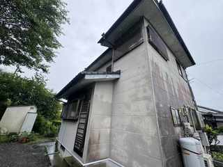

施工前

色あせや汚れが目立っていた外壁を、明るく上品な印象の外観へ仕上げました。
お客様から掲載許可をいただいた実際の施工写真です。


外壁の色あせや汚れが目立つ状態から、外壁を塗装して明るく上品な印象へ。黒系の付帯部が全体を引き締め、建物の印象がはっきりしました。
お客様が「何をした工事なのか」をすぐ確認できるよう、内容を分かりやすくまとめています。
現地調査からお見積もり、施工まで代表が直接対応。塗る場所・塗料・施工内容を確認したうえで、ご住宅に合った内容をご提案します。
※施工金額は建物の大きさ・劣化状況・施工範囲などによって変わります。掲載金額は今回の施工事例の金額です。
まだ塗装するか決めていなくてもご相談いただけます。しつこい営業はいたしません。